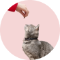
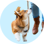

Consultas em horário de plantão, Vacinas obrigatórias,
Procedimentos clínicos, Consultas em horário normal, Microchipagem gratuita, Clínico geral
a domicílio, Exames laboratoriais simples, Exames laboratoriais complexos, Exames de imagem
R$390,00
Hospedagem
Nossa hospedagem é 100% livre. Estimulamos a socialização e
interação de forma correta com outros animais e pessoas. Nossas acomodações são muito
confortáveis seu animalzinho vai amar.
R$80,00

Pet sitter
Pra cuidar é preciso muito amor, mas também muita
responsabilidade. Por isso, avaliamos e também damos um treinamento, que prepara nossos
cuidadores em temas como: principais cuidados para o bem estar pet, comportamento animal,
prevenção de acidentes e segurança.
R$90,00

Passeador
O passeio tem uma missão de gerar melhoria comportamental, além de trabalhar exercícios e
socialização, passeio feito por guia profissional em comportamento de passeios, com foco educativo,
indicado para quem tem restrições de subida de cães no prédio.
Controle individual do tempo, rota, e distância do passeio por GPS
R$150,00
Creche
A creche para cães é ideal para quem não tem disponibilidade em
ficar
com seu peludo durante o dia. Aqui oferecemos monitores 24h para cuidar da segurança e
bem-estar dele, além de brinquedos de enriquecimento ambiental e piscina com cascata para
ele se divertir e socializar!
R$60,00
Um vídeo mostrando de como cuidamos dos pets em nossas lojas!